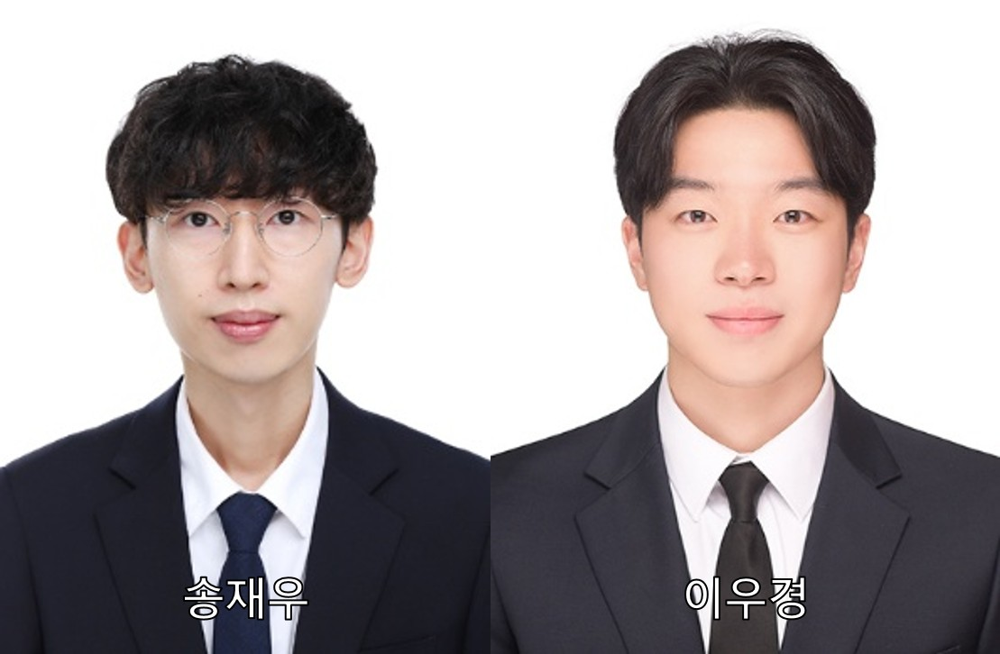

← 소식 목록Back to News
농업기계공학과 대학원생, 한국축산학회 국제 연합심포지엄서 발표상 수상

구두·포스터 발표 최우수상… 스마트 축산 연구역량 입증
농업생명과학대학 농업기계공학과 대학원생(지도교수 이왕희)들이 국내 축산 분야 대표 학술대회에서 우수한 연구 성과를 인정받으며 발표상을 수상했다.
(사)한국축산학회는 7월 8일~10일 제주국제컨벤션센터에서 '2026 국제 연합심포지엄 및 학술발표회'를 개최한 가운데 농업기계공학과 대학원생 송재우 박사과정과 이우경 석사과정이 각각 최우수상을 수상했다.
송재우 박사과정은 유전 및 육종 분야 구두 발표에서 'Multi-algorithmic Translation of Genomic Estimated Breeding Value(GEBV) into Fattening Types of Hanwoo Cattle'을 주제로 발표해 최우수상을 수상했다.
이우경 석사과정은 번식 및 생리 분야 구두 발표에서 'Integrating Systematic Labeling with Machine Learning for Non-invasive Reproductive Stage Detection in Dairy Cattle via Feed Intake Patterns'을 주제로 발표해 최우수상을 수상했다.